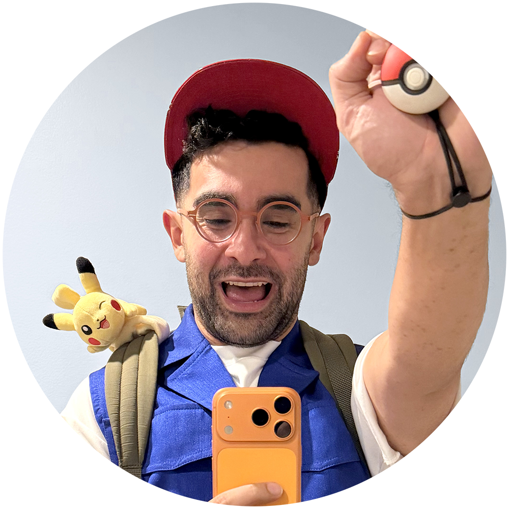

Amir Alavi
I'm a multidisciplinary product designer and developer who builds interactive systems end-to-end—from concept and prototyping to design systems and real-time implementation. My work spans AR/VR, creator tools, and games, with a focus on interaction design, motion, and performance-minded UI that ships on constrained devices. I'm at my best when design and engineering move together: defining the experience, building the underlying systems, and iterating until it feels effortless, responsive, and alive.